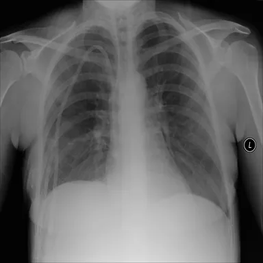
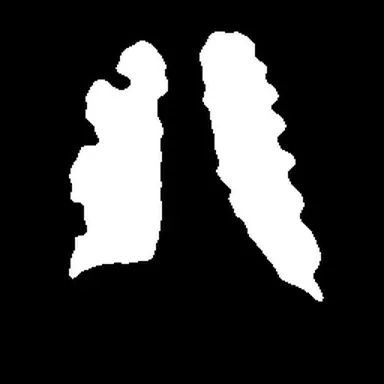
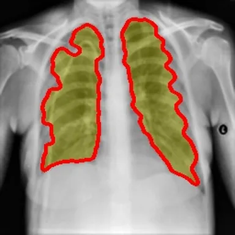
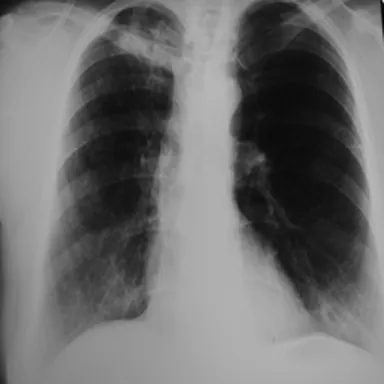
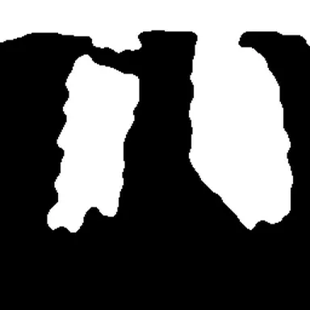
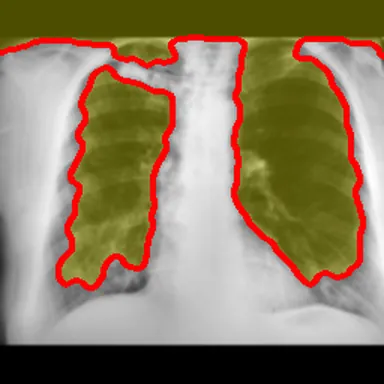

Digital Image Processing · Universitas Gadjah Mada · 2025
Tuberculosis screening from chest X-rays
A screening aid that tells a healthy chest X-ray from one showing tuberculosis. It uses classic image processing rather than a deep network: find the lungs, describe them with a few dozen hand-made numbers, and let an SVM make the call.
- My part
- [What you built: for example the segmentation stage, the features, the model or the Flask app]
- Team
- Keyne Elvaretta, Widad M Rafi, Gracella Wiendy Koesnadi and Erdizah Ghodi Al Haidar
- Data
- Tuberculosis (TB) Chest X-ray Database, IEEE DataPort: 3,500 normal and 3,500 TB images
- Stack
- Python, OpenCV, scikit-image, scikit-learn, Flask
Overview
- 7,000chest X-rays, half normal and half TB
- 91.9%accuracy on 1,400 X-rays the model never saw
- 0.92recall on TB cases, the ones a screen must not miss
Tuberculosis is still one of the deadliest infections, and Indonesia carries the second-largest share of cases in the world. Reading chest X-rays is a common first check, but it depends on radiologists, who are scarce outside the big cities.
The aim was a fast, consistent first pass that runs on an ordinary computer and whose every step can be shown to a person: what the lungs look like after cleanup, which region was measured, and which numbers drove the decision.
This is a course project and a screening aid, not a diagnostic tool.
Pipeline
Standardise
Grayscale, longest side scaled to 256 px and padded to a square, then CLAHE contrast (clip 1.5, 8×8 tiles), a light blur and min–max normalisation.
Find the lungs
Otsu thresholding on a blurred copy picks out the dark lung fields, with a fallback when the first mask comes out too small.
Clean the mask
Closing and opening fill small gaps and remove specks; the regions left are scored by size and shape, and the two most lung-like are kept.
Crop to the lungs
The image is cut to the mask's bounding box and fitted to 128×128, so every sample is measured on the same region.
Describe
Intensity statistics (mean, spread, entropy, skew, kurtosis), a 16-bin histogram and HOG edge-orientation features.
Classify
Random forest, gradient boosting and an RBF SVM compared; the SVM tuned by a 30-round random search over C and γ with 5-fold stratified cross-validation.
Results
| Classifier | Accuracy | TB recall | Normal recall |
|---|---|---|---|
| Random forest | 87.8% | 0.85 | 0.91 |
| Gradient boosting | 89.6% | 0.88 | 0.91 |
| SVM | 88.9% | 0.87 | 0.91 |
| SVM, tuned | 91.9% | 0.92 | 0.92 |





